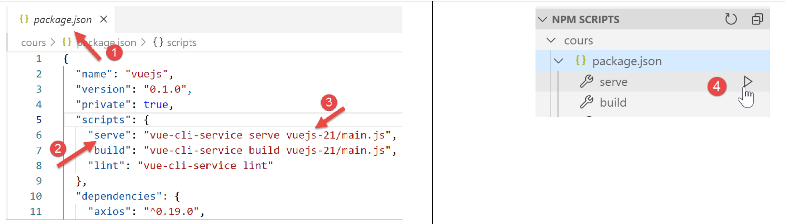

19. Melhorias no cliente Vue.js
19.1. Introduction
Vamos testar o projeto [vuejs-21] com o servidor de desenvolvimento. Por isso, vamos precisar novamente que o servidor envie os cabeçalhos CORS. Por isso, é necessário que o ficheiro [config.json] da versão 14 do servidor de cálculo de impostos autorize estes cabeçalhos:

O projeto [vuejs-21] é criado inicialmente por duplicação do projeto [vuejs-20]. Em seguida, é alterado para [3].
Surgem novos ficheiros:
- [session.js]: exporta um objeto [session] que irá encapsular informações sobre a sessão atual;
- [pluginSession]: disponibiliza o objeto [session] anterior na propriedade [$session] das vistas;
- [NotFound.vue]: uma nova vista apresentada quando o utilizador solicita manualmente um URL que não existe;
Serão alterados os seguintes ficheiros:
- [main.js]: irá inicializar a sessão atual e, quando o utilizador introduzir manualmente um URL, irá restaurá-la;
- [router.js]: são adicionadas verificações para tratar o caso de URL introduzidos pelo utilizador;
- [store.js]: é adicionada uma nova alteração;
- [config.js]: é adicionada uma nova configuração;
- várias vistas destinadas essencialmente a guardar a sessão atual em momentos-chave do ciclo de vida da aplicação. Esta é posteriormente restaurada sempre que o utilizador introduz manualmente os URL;
19.2. O store [Vuex]
O script [./store] evolui da seguinte forma:
// plugin Vuex
import Vue from 'vue'
import Vuex from 'vuex'
Vue.use(Vuex);
// loja Vuex
const store = new Vuex.Store({
state: {
// a tabela de simulações
simulations: [],
// o n.º da última simulação
idSimulation: 0
},
mutations: {
// eliminação da linha n.º de índice
deleteSimulation(state, index) {
...
},
// adição de uma simulação
addSimulation(state, simulation) {
...
},
// limpeza do estado
clear(state) {
// sem mais simulações
state.simulations = [];
// a numeração das simulações recomeça do 0
state.idSimulation = 0;
}
}
});
// exportação do objeto [store]
export default store;
- linhas 24-29: a alteração [clear] elimina a lista de simulações guardadas e repõe a 0 o número da última simulação.
19.3. A sessão
A necessidade de uma sessão decorre do facto de, quando o utilizador introduz um URL no campo de endereço do navegador, o script [main.js] ser executado novamente. Ora, este contém a instrução:
// store Vuex
import store from './store'
Esta instrução importa o ficheiro [./store] seguinte:
// plugin Vuex
import Vue from 'vue'
import Vuex from 'vuex'
Vue.use(Vuex);
// armazenamento Vuex
const store = new Vuex.Store({
state: {
// a tabela de simulações
simulations: [],
// o n.º da última simulação
idSimulation: 0
},
mutations: {
...
}
});
// exportação do objeto [store]
export default store;
Vê-se, nas linhas 7 a 13, que é importada uma matriz de simulações vazia. Assim, se existissem simulações antes de o utilizador introduzir um URL no campo de endereço do navegador, depois já não as teríamos. A ideia é:
- utilizar uma sessão que armazene as informações que se pretende conservar caso o utilizador introduza manualmente um URL;
- guardá-la em momentos-chave da aplicação;
- restaurá-la em [main.js], que é sempre executado quando um URL é digitado manualmente;
O script [./session] é o seguinte:
// importa-se o store Vuex
import store from './store'
// importa-se a configuração
import config from './config';
// o objeto [session]
const session = {
// sessão iniciada
started: false,
// autenticação
authenticated: false,
// hora do salvamento
saveTime: "",
// camada [métier]
métier: null,
// estado Vuex
state: null,
// armazenamento da sessão numa cadeia jSON
save() {
// adicionam-se algumas propriedades à sessão
this.saveTime = Date.now();
this.state = store.state;
// transforma-se em jSON
const json = JSON.stringify(this);
// armazena-se no navegador
localStorage.setItem("session", json);
// eslint-disable-next-line no-console
console.log("session save", json);
},
// restauração da sessão
restore() {
// recuperamos a sessão jSON a partir do navegador
const json = localStorage.getItem("session")
// se tiver sido recuperado algo
if (json) {
// restauram-se todas as chaves da sessão
const restore = JSON.parse(json);
for (var key in restore) {
if (restore.hasOwnProperty(key)) {
this[key] = restore[key];
}
}
// se tiver sido excedido um determinado período de inatividade desde o início da sessão, recomeça-se do zero
let durée = Date.now() - this.saveTime;
if (durée > config.duréeSession) {
// esvazia-se a sessão — esta também será guardada
session.clear();
} else {
// regenera-se o store Vuex
store.replaceState(JSON.parse(JSON.stringify(this.state)));
}
}
// eslint-disable-next-line no-console
console.log("session restore", this);
},
// limpa-se a sessão
clear() {
// eslint-disable-next-line no-console
console.log("session clear");
// zera-se determinados campos da sessão
this.authenticated = false;
this.saveTime = "";
this.started = false;
if (this.métier) {
// reinicializa-se o campo [taxAdminData]
this.métier.taxAdminData = null;
}
// o armazenamento Vuex também é limpo
store.commit("clear");
// a nova sessão é guardada
this.save();
},
}
// exportação do objeto [session]
export default session;
Comentários
- linha 2: a sessão irá também encapsular o store [Vuex] (lista de simulações, n.º da última simulação realizada);
- linhas 7-17: as informações guardadas pela sessão:
- [started]: se a sessão jSON com o servidor foi iniciada ou não;
- [authenticated]: se o utilizador se autenticou ou não;
- [saveTime]: a data, em milissegundos, do último registo;
- [métier]: uma referência à camada [métier]. Esta contém o dado [taxAdminData] que permite o cálculo do imposto;
- [state]: o estado do armazenamento [Vuex] (lista de simulações, n.º da última simulação realizada);
- linhas 20-30: o método [save] guarda a sessão localmente no navegador que está a executar a aplicação;
- linha 22: regista-se a hora do armazenamento;
- linha 23: recupera-se o [state] da loja [Vuex];
- linha 25: cria-se a cadeia jSON da sessão;
- linha 27: é armazenada localmente no navegador, associada à chave [session];
- linhas 33-57: o método [restore] permite restaurar uma sessão a partir da sua cópia de segurança local no navegador;
- linha 35: recupera-se o backup local jSON;
- linha 37: se tiver sido recuperado algo;
- linhas 39-44: o objeto [session] é reconstituído;
- linha 46: calcula-se o tempo decorrido desde o último backup;
- linhas 47-50: se esse intervalo for superior a um valor [config.duréeSession] definido na configuração, a sessão é reiniciada (linha 49) e, nessa ocasião, guardada;
- linha 52: caso contrário, regenera-se o atributo [state] do armazenamento [Vuex];
- linhas 60-75: o método [clear] reinicializa a sessão;
- linhas 64-70: as propriedades da sessão são reinicializadas para os seus valores iniciais;
- linha 72: assim como o armazenamento [Vuex];
- linha 74: a nova sessão é guardada;
19.4. O ficheiro de configuração [config]
O ficheiro [./config] sofre as seguintes alterações:
// utilização da biblioteca [axios]
const axios = require('axios');
// tempo limite das solicitações HTTP
axios.defaults.timeout = 2000;
...
// exportação da configuração
export default {
// objeto [axios]
axios: axios,
// tempo máximo de inatividade da sessão: 5 min = 300 s = 300 000 ms
duréeSession: 300000
}
- linha 12: vamos gerir a sessão da aplicação de forma semelhante à gestão de uma sessão web. Definimos aqui um tempo máximo de inatividade de 5 minutos;
19.5. O plugin [pluginSession]
Tal como já foi feito inúmeras vezes, o plugin [pluginSession] permitirá que as vistas tenham acesso à sessão através da propriedade [this.$session]:
export default {
install(Vue, session) {
// adiciona uma propriedade [$session] à classe «vista»
Object.defineProperty(Vue.prototype, '$session', {
// quando Vue.$session é referenciado, o segundo parâmetro passa a ser [session]
get: () => session,
})
}
}
19.6. O script principal [main]
O script principal [./main.js] evolui da seguinte forma:
// registo de arranque
// eslint-disable-next-line no-console
console.log("main started");
// importações
import Vue from 'vue'
...
// instanciação da camada [métier]
import Métier from './couches/Métier';
const métier = new Métier();
// plugin [métier]
import pluginMétier from './plugins/pluginMétier'
Vue.use(pluginMétier, métier)
// armazenamento Vuex
import store from './store'
// sessão
import session from './session';
import pluginSession from './plugins/pluginSession'
Vue.use(pluginSession, session)
// a sessão é restaurada antes do reinício
session.restore();
// restaura-se a camada [métier]
if (session.métier && session.métier.taxAdminData) {
métier.setTaxAdminData(session.métier.taxAdminData);
}
// inicialização do UI
new Vue({
el: '#aplicação,
// o router
router: router,
// a persiana Vuex
store: store,
// a vista principal
render: h => h(Main),
})
// registo de fim
// eslint-disable-next-line no-console
console.log("main terminated, session=", session);
- linha 19: importa-se a sessão;
- linha 20: importa-se o seu plugin;
- linha 21: o plugin [pluginSession] é integrado ao [Vue]. Após esta instrução, todas as vistas dispõem da sessão no seu atributo [$session];
- linha 27: a sessão é restaurada. A sessão importada na linha 11 é então inicializada com o conteúdo do seu último registo;
- após a linha 16, as vistas dispõem de uma propriedade [$métier] inicializada na linha 12. Esta propriedade não contém a informação [taxAdminData] que permite calcular o imposto;
- linhas 30-32: se a restauração que acabou de ser efetuada tiver restaurado a propriedade [session.métier.taxAdminData], então a propriedade [$métier] das vistas é inicializada com esse valor;
19.7. O ficheiro de encaminhamento [router]
O ficheiro de encaminhamento [./router] evolui da seguinte forma:
// importações
import Vue from 'vue'
import VueRouter from 'vue-router'
// as vistas
import Authentification from './views/Authentification'
import CalculImpot from './views/CalculImpot'
import ListeSimulations from './views/ListeSimulations'
import NotFound from './views/NotFound'
// a sessão
import session from './session'
// plugin de encaminhamento
Vue.use(VueRouter)
// as rotas da aplicação
const routes = [
// autenticação
{ path: '/', name: 'authentification', component: Authentification },
{ path: '/authentification', name: 'authentification', component: Authentification },
// cálculo do imposto
{
path: '/calcul-impot', name: 'calculImpot', component: CalculImpot,
meta: { authenticated: true }
},
// lista de simulações
{
path: '/liste-des-simulations', name: 'listeSimulations', component: ListeSimulations,
meta: { authenticated: true }
},
// fim da sessão
{
path: '/fin-session', name: 'finSession'
},
// página desconhecida
{
path: '*', name: 'notFound', component: NotFound,
},
]
// o router
const router = new VueRouter({
// as rotas
routes,
// o modo de visualização do URL
mode: 'history',
// o URL básico da aplicação
base: '/client-vuejs-impot/'
})
// verificação das rotas
router.beforeEach((to, from, next) => {
// eslint-disable-next-line no-console
console.log("router to=", to, "from=", from);
// Rota reservada a utilizadores autenticados?
if (to.meta.authenticated && !session.authenticated) {
next({
// passamos à autenticação
name: 'authentification',
})
// regresso ao ciclo de eventos
return;
}
// caso específico do fim da sessão
if (to.name === "finSession") {
// limpa-se a sessão
session.clear();
// passamos para a vista [authentification]
next({
name: 'authentification',
})
// regresso ao ciclo de eventos
return;
}
// outros casos — vista seguinte normal do encaminhamento
next();
})
// exportação do router
export default router
Comentários
- linhas 16-38: algumas rotas foram enriquecidas com informações adicionais;
- linha 19: foi criada uma nova rota para aceder à vista [Authentification];
- linhas 21-24: a rota que conduz à vista [CalculImpot] tem agora uma propriedade [meta] (este nome é obrigatório). O conteúdo deste objeto pode ser qualquer e é definido pelo programador;
- linha 23: definimos em [meta] a propriedade [authenticated] (este nome pode ser qualquer um). Para nós, isso significa que, para aceder à vista [CalculImpot], o utilizador tem de estar autenticado;
- linhas 26-29: faz-se o mesmo para a rota que conduz à vista [ListeSimulations]. Também aqui o utilizador deve estar autenticado;
- A propriedade [meta.authenticated] vai permitir-nos verificar que um utilizador que introduza manualmente os URL das vistas [CalculImpot, ListeSimulations] não os pode obter se não estiver autenticado;
- linhas 51-76: o método [beforeEach] é executado antes de uma vista ser encaminhada. Este é o momento certo para efetuar verificações;
- [to]: a próxima rota, caso não se faça nada;
- [from]: a última rota apresentada;
- [next]: função que permite alterar a próxima rota apresentada;
- linha 55: verifica-se se a próxima rota exige que o utilizador esteja autenticado;
- linhas 56-59: se sim e o utilizador não estiver autenticado, altera-se a próxima rota para a vista [Authentification];
- linhas 64-73: trata-se do caso específico da rota [finSession] das linhas 30-32. Esta não tem nenhuma vista associada;
- linha 66: reinicializa-se a sessão para o seu valor inicial;
- linhas 68-70: programa-se a vista [Authentification] como próxima vista;
- linha 75: se não se tratar de nenhum dos dois casos anteriores, limita-se a passar para a rota prevista pelo ficheiro de encaminhamento;
- linhas 35-37: prevê-se uma vista [NotFound] se a rota introduzida pelo utilizador não corresponder a nenhuma rota conhecida. Esta vista é importada na linha 8. As rotas são verificadas pela ordem do ficheiro de roteamento. Portanto, se se chegar à linha 36, significa que a rota solicitada não corresponde a nenhuma das rotas das linhas 18-33;
19.8. A vista [NotFound]
A vista [NotFound] é apresentada se a rota introduzida pelo utilizador não corresponder a nenhuma rota conhecida:

O código da vista é o seguinte:
<!-- definição HTML da vista -->
<template>
<!-- formatação -->
<Layout :left="true" :right="true">
<!-- alerta na coluna da direita -->
<template slot="right">
<!-- mensagem sobre fundo amarelo -->
<b-alert show variant="danger" align="center">
<h4>Cette page n'existe pas</h4>
</b-alert>
</template>
<!-- menu de navegação na coluna da esquerda -->
<Menu slot="left" :options="options" />
</Layout>
</template>
<script>
// importações
import Layout from "./Layout";
import Menu from "./Menu";
export default {
// componentes
components: {
Layout,
Menu
},
// estado interno do componente
data() {
return {
// opções do menu de navegação
options: [
{
text: "Authentification",
path: "/"
}
]
};
},
// ciclo de vida
created() {
// eslint-disable-next-line
console.log("NotFound created");
// analisamos quais as opções de menu a apresentar
if (this.$session.authenticated && this.$métier.taxAdminData) {
// o utilizador pode realizar simulações
Array.prototype.push.apply(this.options, [
{
text: "Calcul de l'impôt",
path: "/calcul-impot"
},
{
text: "Liste des simulations",
path: "/liste-des-simulations"
}
]);
}
}
};
</script>
Comentários
- linha 4: utiliza as duas colunas das vistas encaminhadas;
- linhas 6-11: uma mensagem de erro;
- linha 13: o menu de navegação ocupa a coluna da esquerda;
- linhas 31-36: as opções predefinidas do menu;
- linhas 40-57: código executado quando a vista é criada;
- linha 44: verifica-se se o utilizador pode realizar simulações;
- linhas 45-55: se sim, adicionam-se duas opções ao menu de navegação, aquelas que exigem autenticação e que a camada [métier] esteja operacional (linhas 46-55);
19.9. A vista [Authentification]
A vista [Authentification] evolui da seguinte forma:
<!-- definição HTML da vista -->
<template>
<Layout :left="false" :right="true">
...
</Layout>
</template>
<!-- dinâmica da vista -->
<script>
import Layout from "./Layout";
export default {
// estado do componente
data() {
return {
// utilizador
user: "",
// a sua palavra-passe
password: "",
// controla a exibição de uma mensagem de erro
showError: false,
// a mensagem de erro
message: ""
};
},
// componentes utilizados
components: {
Layout
},
// propriedades calculadas
computed: {
// entradas válidas
valid() {
return this.user && this.password && this.$session.started;
}
},
// gestores de eventos
methods: {
// ----------- autenticação
async login() {
try {
// início da espera
this.$emit("loading", true);
// ainda não estamos autenticados
this.$session.authenticated = false;
// autenticação bloqueante junto do servidor
const response = await this.$dao.authentifierUtilisateur(
this.user,
this.password
);
// fim do carregamento
this.$emit("loading", false);
// análise da resposta do servidor
if (response.état != 200) {
// exibe-se o erro
this.message = response.réponse;
this.showError = true;
// regresso ao ciclo de eventos
return;
}
// sem erro
this.showError = false;
// autenticação bem-sucedida
this.$session.authenticated = true;
// --------- agora solicitam-se os dados da administração fiscal
// inicialmente, sem dados
this.$métier.setTaxAdminData(null);
// início da espera
this.$emit("loading", true);
// pedido em espera junto do servidor
const response2 = await this.$dao.getAdminData();
// fim do carregamento
this.$emit("loading", false);
// análise da resposta
if (response2.état != 1000) {
// exibe-se o erro
this.message = response2.réponse;
this.showError = true;
// regresso ao ciclo de eventos
return;
}
// sem erro
this.showError = false;
// os dados recebidos são armazenados na camada [métier]
this.$métier.setTaxAdminData(response2.réponse);
// é possível avançar para o cálculo do imposto
this.$router.push({ name: "calculImpot" });
} catch (error) {
// o erro é reportado ao componente principal
this.$emit("error", error);
} finally {
// atualização da sessão
this.$session.métier = this.$métier;
// a sessão é guardada
this.$session.save();
}
}
},
// ciclo de vida: o componente acaba de ser criado
created() {
// eslint-disable-next-line
console.log("Authentification created");
// O utilizador pode realizar simulações?
if (
this.$session.started &&
this.$session.authenticated &&
this.$métier.taxAdminData
) {
// então o utilizador pode realizar simulações
this.$router.push({ name: "calculImpot" });
// regresso ao ciclo de eventos
return;
}
// se a sessão jSON já tiver sido iniciada, não a reiniciamos novamente
if (!this.$session.started) {
// início da espera
this.$emit("loading", true);
// inicializa-se a sessão com o servidor — pedido assíncrono
// utiliza-se a promessa devolvida pelos métodos da camada [dao]
this.$dao
// inicializa-se uma sessão jSON
.initSession()
// obteve-se a resposta
.then(response => {
// fim da espera
this.$emit("loading", false);
// análise da resposta
if (response.état != 700) {
// exibe-se o erro
this.message = response.réponse;
this.showError = true;
// regresso ao ciclo de eventos
return;
}
// a sessão foi iniciada
this.$session.started = true;
})
// em caso de erro
.catch(error => {
// o erro é reportado à vista [Main]
this.$emit("error", error);
})
// em todos os casos
.finally(() => {
// a sessão é guardada
this.$session.save();
});
}
}
};
</script>
Comentários
- destacámos a amarelo as instruções que utilizam a sessão introduzida nesta versão do cliente [Vue.js];
- linhas 97, 148: no final dos métodos [login, created], a sessão é guardada independentemente do resultado das consultas HTTP que ocorrem nesses métodos (cláusula [finally] em ambos os casos);
- o método [created] das linhas 102-150 é executado sempre que a vista [Authentification] é criada. Se tiver sido o utilizador a introduzir o URL da vista, a sessão irá indicar-nos o que fazer;
- linhas 106-115: se a sessão jSON estiver iniciada, o utilizador autenticado e os dados [this.$métier.taxAdminData] inicializados, então o utilizador pode aceder diretamente ao formulário de cálculo do imposto (linha 112);
- linha 117: o método [created] era utilizado na versão anterior para inicializar uma sessão jSON com o servidor. Esta fase é desnecessária se já tiver ocorrido;
- linhas 42-66: o método de autenticação;
- linha 66: se a autenticação for bem-sucedida, isso é registado na sessão;
- linhas 67-92: o pedido ao servidor dos dados da administração fiscal [taxAdminData];
- linha 95: no final desta fase, atualiza-se a propriedade [métier] da sessão, independentemente de a operação ter sido bem-sucedida ou não;
19.10. A vista [CalculImpot]
O código da vista [CalculImpot] evolui da seguinte forma:
<!-- definição HTML da vista -->
<template>
...
</template>
<script>
// importações
import FormCalculImpot from "./FormCalculImpot";
import Menu from "./Menu";
import Layout from "./Layout";
export default {
// estado interno
data() {
return {
// opções do menu
options: [
{
text: "Liste des simulations",
path: "/liste-des-simulations"
},
{
text: "Fin de session",
path: "/fin-session"
}
],
// resultado do cálculo do imposto
résultat: "",
résultatObtenu: false
};
},
// componentes utilizados
components: {
Layout,
FormCalculImpot,
Menu
},
// métodos de gestão de eventos
methods: {
// resultado do cálculo do imposto
handleResultatObtenu(résultat) {
// o resultado é construído em cadeia HTML
...
// uma simulação de +
this.$store.commit("addSimulation", résultat);
// a sessão é guardada
this.$session.save();
}
},
// ciclo de vida
created() {
// eslint-disable-next-line
console.log("CalculImpot created");
}
};
</script>
Comentários
- linha 45: a simulação calculada é adicionada ao armazenamento [Vuex]. Isto tem impacto na sessão, que inclui a propriedade [state] do armazenamento. Por isso, guarda-se a sessão (linha 47);
- linha 51: cria-se um método [created] para acompanhar, nos registos, a criação das vistas;
19.11. A vista [ListeSimulations]
A vista [ListeSimulations] sofre as seguintes alterações:
<!-- definição HTML da vista -->
<template>
...
</div>
</template>
<script>
// importações
import Layout from "./Layout";
import Menu from "./Menu";
export default {
// componentes
components: {
Layout,
Menu
},
// estado interno
data() {
...
},
// estado interno calculado
computed: {
// lista de simulações selecionadas no armazenamento Vuex
simulations() {
return this.$store.state.simulations;
}
},
// métodos
methods: {
supprimerSimulation(index) {
// eslint-disable-next-line
console.log("supprimerSimulation", index);
// eliminação da simulação n.º [index]
this.$store.commit("deleteSimulation", index);
// a sessão é guardada
this.$session.save();
}
},
// ciclo de vida
created() {
// eslint-disable-next-line
console.log("ListeSimulations created");
}
};
</script>
Comentários
- linha 36: após a eliminação de uma simulação na linha 34, guarda-se a sessão para ter em conta esta alteração de estado;
- linhas 40-43: continua-se a acompanhar a criação das vistas;
19.12. Execução do projeto

Durante os testes, verifique os seguintes pontos:
- se o utilizador «utilizar» a aplicação através dos links do menu de navegação e dos botões/links de ação, esta funciona;
- se o utilizador introduzir manualmente URL, a aplicação continua a funcionar. Efetue, em particular, o seguinte teste:
- faça simulações;
- uma vez na vista [ListeSimulations], atualize (F5) a vista. Na aplicação anterior, [vuejs-20], perdiam-se então as simulações. Aqui, isso não acontece: as simulações já realizadas são recuperadas;
- consulte os registos para compreender:
- em que momento o script [main] é executado. Deve verificar que isso acontece sempre que o utilizador introduz manualmente um URL;
- em que momentos as visualizações são criadas. Deve verificar que são criadas sempre que vão ser apresentadas;
- o funcionamento do encaminhamento. Antes de cada encaminhamento, é criado um registo que lhe indica:
- a rota de onde vem;
- a rota para onde vai;
19.13. Implantação da aplicação num servidor local
Como exercício, siga o parágrafo |Implantação num servidor local| para implantar o projeto [vuejs-21] no servidor Laragon local. Em seguida, teste-o.
19.14. Ajustes na versão móvel
Teoricamente, a utilização do Bootstrap deveria permitir-nos ter uma aplicação utilizável em diferentes dispositivos: smartphone, tablet, computadores portáteis e de secretária. O que diferencia estes dispositivos é o tamanho do ecrã.
Se testarmos a versão [vuejs-21] num telemóvel, verificamos que a apresentação das vistas é caótica. A versão [vuejs-22] corrige este problema. Todas as alterações foram feitas nos modelos das vistas. Consistiram essencialmente em aperfeiçoar a apresentação para o ecrã de um smartphone. Quando esta está aperfeiçoada, a apresentação em ecrãs de maior dimensão ocorre de forma fluida graças ao Bootstrap.

19.14.1. A vista [Main]
A vista [Main] evolui da seguinte forma:
<!-- definição HTML da vista -->
<template>
<div class="container">
<b-card>
<!-- jumbotron -->
<b-jumbotron>
<b-row>
<b-col sm="4">
<img src="../assets/logo.jpg" alt="Cerisier en fleurs" />
</b-col>
<b-col sm="8">
<h1>Calculez votre impôt</h1>
</b-col>
</b-row>
</b-jumbotron>
....
</b-card>
</div>
</template>
Comentários
- linha 8: onde estava [cols=’4’], escreve-se [sm=’4’]. [sm] significa [small]. Os ecrãs dos smartphones enquadram-se nesta categoria. As outras categorias são [xs=extra small, md=medium, lg=large, xl=extra large];
- linha 11: o mesmo;
19.14.2. A vista [Layout]
A vista [Layout] evolui da seguinte forma:
<!-- definição HTML do layout da vista encaminhada -->
<template>
<!-- linha -->
<div>
<b-row>
<!-- área de três colunas à esquerda -->
<b-col sm="3" v-if="left">
<slot name="left" />
</b-col>
<!-- área de nove colunas à direita -->
<b-col sm="9" v-if="right">
<slot name="right" />
</b-col>
</b-row>
</div>
</template>
19.14.3. A vista [Authentification]
A vista [Authentification] evolui da seguinte forma:
<!-- definição HTML da vista -->
<template>
<Layout :left="false" :right="true">
<template slot="right">
<!-- formulário HTML — os valores são enviados através da ação [authentifier-utilisateur] -->
<b-form @submit.prevent="login">
<!-- título -->
<b-alert show variant="primary">
<h4>Bienvenue. Veuillez vous authentifier pour vous connecter</h4>
</b-alert>
<!-- 1.ª linha -->
<b-form-group label="Nom d'utilisateur" label-for="user" description="Tapez admin">
<!-- área de introdução de dados do utilizador -->
<b-col sm="6">
<b-form-input type="text" id="user" placeholder="Nom d'utilisateur" v-model="user" />
</b-col>
</b-form-group>
<!-- 2.ª linha -->
<b-form-group label="Mot de passe" label-for="password" description="Tapez admin">
<!-- campo de introdução da palavra-passe -->
<b-col sm="6">
<b-input type="password" id="password" placeholder="Mot de passe" v-model="password" />
</b-col>
</b-form-group>
<!-- 3.ª linha -->
<b-alert
show
variant="danger"
v-if="showError"
class="mt-3"
>L'erreur suivante s'est produite : {{message}}</b-alert>
<!-- botão do tipo [submit] na 3.ª linha -->
<b-row>
<b-col sm="2">
<b-button variant="primary" type="submit" :disabled="!valid">Valider</b-button>
</b-col>
</b-row>
</b-form>
</template>
</Layout>
</template>
Comentários
- linhas 11 e 19: foi removido o atributo [label-cols] que definia o número de colunas do rótulo do campo de introdução de dados. Na ausência deste atributo, o rótulo fica acima do campo de introdução de dados. Isto adapta-se melhor aos ecrãs dos smartphones;
19.14.4. A vista [CalculImpot]
A vista [CalculImpot] sofre as seguintes alterações:
<!-- definição HTML da vista -->
<template>
<div>
<Layout :left="true" :right="true">
<!-- formulário de cálculo do imposto à direita -->
<FormCalculImpot slot="right" @resultatObtenu="handleResultatObtenu" />
<!-- menu de navegação à esquerda -->
<Menu slot="left" :options="options" />
</Layout>
<!-- área de exibição dos resultados do cálculo do imposto abaixo do formulário -->
<b-row v-if="résultatObtenu" class="mt-3">
<!-- área vazia com três colunas -->
<b-col sm="3" />
<!-- área de nove colunas -->
<b-col sm="9">
<b-alert show variant="success">
<span v-html="résultat"></span>
</b-alert>
</b-col>
</b-row>
</div>
</template>
19.14.5. A vista [FormCalculImpot]
A vista [FormCalculImpot] passa a ter o seguinte aspeto:
<!-- definição HTML da vista -->
<template>
<!-- formulário HTML -->
<b-form @submit.prevent="calculerImpot" class="mb-3">
<!-- mensagem em 12 colunas sobre fundo azul -->
<b-row>
<b-col sm="12">
<b-alert show variant="primary">
<h4>Remplissez le formulaire ci-dessous puis validez-le</h4>
</b-alert>
</b-col>
</b-row>
<!-- elementos do formulário -->
<!-- primeira linha -->
<b-form-group label="Etes-vous marié(e) ou pacsé(e) ?">
<!-- botões de opção em 5 colunas-->
<b-col sm="5">
<b-form-radio v-model="marié" value="oui">Oui</b-form-radio>
<b-form-radio v-model="marié" value="non">Non</b-form-radio>
</b-col>
</b-form-group>
<!-- segunda linha -->
<b-form-group label="Nombre d'enfants à charge" label-for="enfants">
<b-form-input
type="text"
id="enfants"
placeholder="Indiquez votre nombre d'enfants"
v-model="enfants"
:state="enfantsValide"
></b-form-input>
<!-- eventual mensagem de erro -->
<b-form-invalid-feedback :state="enfantsValide">Vous devez saisir un nombre positif ou nul</b-form-invalid-feedback>
</b-form-group>
<!-- terceira linha -->
<b-form-group
label="Salaire annuel net imposable"
label-for="salaire"
description="Arrondissez à l'euro inférieur"
>
<b-form-input
type="text"
id="salaire"
placeholder="Salaire annuel"
v-model="salaire"
:state="salaireValide"
></b-form-input>
<!-- eventual mensagem de erro -->
<b-form-invalid-feedback :state="salaireValide">Vous devez saisir un nombre positif ou nul</b-form-invalid-feedback>
</b-form-group>
<!-- quarta linha, botão [submit] -->
<b-col sm="3">
<b-button type="submit" variant="primary" :disabled="formInvalide">Valider</b-button>
</b-col>
</b-form>
</template>
Comentários
- linhas 15, 23, 35: foi eliminado o atributo [label-cols];
Além disso, estamos a atualizar os testes de validade:
...
// estado interno calculado
computed: {
// validação do formulário
formInvalide() {
return (
// salário inválido
!this.salaire.match(/^\s*\d+\s*$/) ||
// ou filhos inválidos
!this.enfants.match(/^\s*\d+\s*$/) ||
// ou dados fiscais não obtidos
!this.$métier.taxAdminData
);
},
// validação do salário
salaireValide() {
// deve ser um valor numérico >=0
return Boolean(
this.salaire.match(/^\s*\d+\s*$/) || this.salaire.match(/^\s*$/)
);
},
// validação dos filhos
enfantsValide() {
// deve ser um valor numérico >=0
return Boolean(
this.enfants.match(/^\s*\d+\s*$/) || this.enfants.match(/^\s*$/)
);
}
},
...
Comentários
- linha 19: quando nada foi introduzido, a entrada é considerada válida. Isto permite que a entrada seja válida quando a vista é inicialmente apresentada. Na versão anterior, a entrada aparecia inicialmente como errada;
- linha 26: o mesmo se aplica;
- linhas 5-14: o botão de validação só fica ativo se ambas as entradas contiverem algum valor e forem válidas;
19.14.6. A vista [Menu]
A vista [Menu] é alterada da seguinte forma:
<!-- definição HTML da vista -->
<template>
<b-card class="mb-3">
<!-- menu Bootstrap vertical -->
<b-nav vertical>
<!-- opções do menu -->
<b-nav-item
v-for="(option,index) of options"
:key="index"
:to="option.path"
exact
exact-active-class="active"
>{{option.text}}</b-nav-item>
</b-nav>
</b-card>
</template>
Comentários
- linha 3: adiciona-se a baliza <b-card> para envolver o menu com uma moldura fina. Isto permite localizar melhor o menu no smartphone;
19.14.7. A vista [ListeSimulations]
A vista [ListeSimulations] permanece inalterada:
<!-- definição HTML da vista -->
<template>
<div>
<!-- formatação -->
<Layout :left="true" :right="true">
<!-- simulações na coluna da direita -->
<template slot="right">
<template v-if="simulations.length==0">
<!-- sem simulações -->
<b-alert show variant="primary">
<h4>Votre liste de simulations est vide</h4>
</b-alert>
</template>
<template v-if="simulations.length!=0">
<!-- existem simulações -->
<b-alert show variant="primary">
<h4>Liste de vos simulations</h4>
</b-alert>
<!-- tabela de simulações -->
<b-table striped hover responsive :items="simulations" :fields="fields">
<template v-slot:cell(action)="data">
<b-button variant="link" @click="supprimerSimulation(data.index)">Supprimer</b-button>
</template>
</b-table>
</template>
</template>
<!-- menu de navegação na coluna da esquerda -->
<Menu slot="left" :options="options" />
</Layout>
</div>
</template>
Comentários
- linha 20: repare-se no atributo [responsive], que faz com que a apresentação da tabela se adapte ao tamanho do ecrã:

- em [2], em ecrãs pequenos, uma barra de deslocamento horizontal permite visualizar a tabela;
19.14.8. A vista [NotFound]
Permanece inalterada.
19.14.9. As visualizações em dispositivos móveis


Nota: certamente é possível obter visualizações ainda mais adaptadas aos dispositivos móveis. Estou a pensar, nomeadamente, no menu de navegação, que poderia ser melhorado, mas há outros aspetos a considerar. O objetivo principal deste documento não era a criação de uma aplicação móvel. Nesse caso, talvez tivéssemos recorrido a um framework como o Ionic |https://ionicframework.com/|.